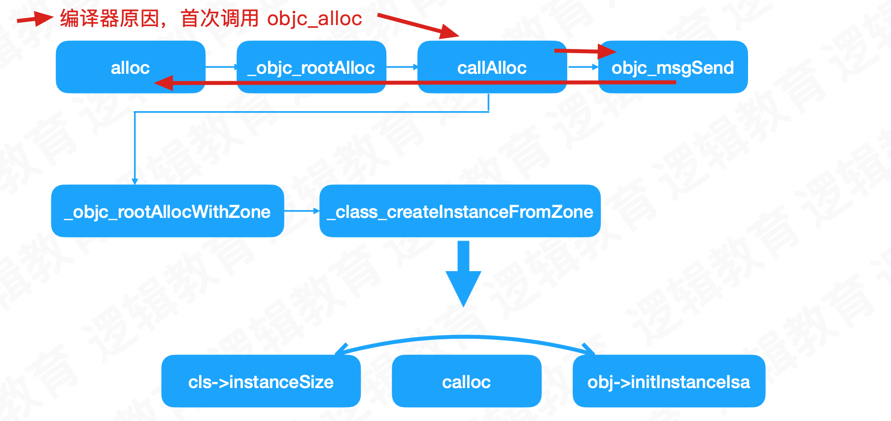

OC对象原理
对象的alloc流程
alloc开辟了内存
虽然在NSObject的alloc方法中打了断点，但是并未进入，进入的是：
id
objc_alloc(Class cls)
{
return callAlloc(cls, true/*checkNil*/, false/*allocWithZone*/);
}
原因：由于llvm对OC对象的处理，OC类在调用alloc方法时，会先调用objc_alloc函数，后续在callAlloc中调用alloc方法
...
case OMF_alloc:
if (isClassMessage &&
Runtime.shouldUseRuntimeFunctionsForAlloc() &&
ResultType->isObjCObjectPointerType()) {
// [Foo alloc] -> objc_alloc(Foo) or
// [self alloc] -> objc_alloc(self)
if (Sel.isUnarySelector() && Sel.getNameForSlot(0) == "alloc")
return CGF.EmitObjCAlloc(Receiver, CGF.ConvertType(ResultType));
...
/// Allocate the given objc object.
/// call i8* \@objc_alloc(i8* %value)
llvm::Value *CodeGenFunction::EmitObjCAlloc(llvm::Value *value,
llvm::Type *resultType) {
return emitObjCValueOperation(*this, value, resultType,
CGM.getObjCEntrypoints().objc_alloc,
"objc_alloc");
}
static ALWAYS_INLINE id
callAlloc(Class cls, bool checkNil, bool allocWithZone=false)
{
#if __OBJC2__
if (slowpath(checkNil && !cls)) return nil;
if (fastpath(!cls->ISA()->hasCustomAWZ())) {
return _objc_rootAllocWithZone(cls, nil);
}
#endif
// No shortcuts available.
if (allocWithZone) {
return ((id(*)(id, SEL, struct _NSZone *))objc_msgSend)(cls, @selector(allocWithZone:), nil);
}
return ((id(*)(id, SEL))objc_msgSend)(cls, @selector(alloc));
}

alloc核心方法
instanceSize
- 计算需要开辟的内存空间
- 源码可以看出，至少16字节
inline size_t instanceSize(size_t extraBytes) const {
if (fastpath(cache.hasFastInstanceSize(extraBytes))) {
return cache.fastInstanceSize(extraBytes);
}
size_t size = alignedInstanceSize() + extraBytes;
// CF requires all objects be at least 16 bytes.
if (size < 16) size = 16;
return size;
}
// 这里是调用的计算方法
// Class's ivar size rounded up to a pointer-size boundary.
uint32_t alignedInstanceSize() const {
return word_align(unalignedInstanceSize());
}
// 对象的实例变量大小
// 至少为8 isa指针
// May be unaligned depending on class's ivars.
uint32_t unalignedInstanceSize() const {
ASSERT(isRealized());
uint32_t size = data()->ro()->instanceSize;
return size;
}
// 8字节对齐 8的倍数
// 64位系统中，是7，算法表示按8对齐，为8的倍数
// # define WORD_MASK 7UL
static inline uint32_t word_align(uint32_t x) {
return (x + WORD_MASK) & ~WORD_MASK;
}
calloc
- 开辟内存，返回指针
obj = (id)calloc(1, size);
initInstanceIsa
- 地址空间关联到相应的类
obj->initInstanceIsa(cls, hasCxxDtor);
最终调用了 initIsa(cls, true, hasCxxDtor);
结构体内存对齐
- 对象声明的实例变量是按照结构体的内存对齐方式进行
- 对象的属性，底层会进行重排优化，进行合并成一个字节进行存储
结构体内存对齐原则：
- 结构体或联合体的数据成员，第一个数据成员放在offset为0的位置，后续每个成员存储的起始位置要从该成员大小的整数倍开始。如果该成员有子成员，按最大子成员的大小整数倍开始
- 包含子成员的数据占用大小是最大子成员大小的整数倍
- 结构体总大小是内部最大成员整数倍
对象的大小
sizeof
- 类型大小
class_getInstanceSize
- 对象最终占用空间大小，包含结构体对齐。
- 看源码是8字节对齐。
- 通过malloc_size开了一一个大小，但是其中最终使用的大小
- 比如[NSObject alloc]是8
malloc_size
- 实际分配的大小
- 看源码是因为16字节对齐，比如[NSObject alloc]是16
libmalloc
calloc是一个函数声明，在实际运行中，会进行赋值
void *(* MALLOC_ZONE_FN_PTR(calloc))(struct _malloc_zone_t *zone, size_t num_items, size_t size); /* same as malloc, but block returned is set to zero */
// 实际调用的时候
ptr = zone->calloc(zone, num_items, size);
在Xcode进行打印，找到赋值的最终调用位置
(lldb) p zone->calloc
(void *(*)(_malloc_zone_t *, size_t, size_t)) $0 = 0x00000001002f4ca5 (.dylib`default_zone_calloc at malloc.c:385)
(lldb) p zone->calloc
(void *(*)(_malloc_zone_t *, size_t, size_t)) $1 = 0x00000001002fa3d1 (.dylib`nano_calloc at nano_malloc.c:878)
最终调用
static void *
nano_calloc(nanozone_t *nanozone, size_t num_items, size_t size)
{
size_t total_bytes;
if (calloc_get_size(num_items, size, 0, &total_bytes)) {
return NULL;
}
if (total_bytes <= NANO_MAX_SIZE) {
// 核心代码
void *p = _nano_malloc_check_clear(nanozone, total_bytes, 1);
if (p) {
return p;
} else {
/* FALLTHROUGH to helper zone */
}
}
malloc_zone_t *zone = (malloc_zone_t *)(nanozone->helper_zone);
return zone->calloc(zone, 1, total_bytes);
}
_nano_malloc_check_clear函数中的核心代码：
// 分配大小来自
size_t slot_bytes = segregated_size_to_fit(nanozone, size, &slot_key); // Note slot_key is set here
#define NANO_REGIME_QUANTA_SIZE (1 << SHIFT_NANO_QUANTUM) // 16
#define SHIFT_NANO_QUANTUM 4
static MALLOC_INLINE size_t
segregated_size_to_fit(nanozone_t *nanozone, size_t size, size_t *pKey)
{
size_t k, slot_bytes;
if (0 == size) {
size = NANO_REGIME_QUANTA_SIZE; // Historical behavior
}
// + 15 左移4位
k = (size + NANO_REGIME_QUANTA_SIZE - 1) >> SHIFT_NANO_QUANTUM; // round up and shift for number of quanta
// 右移4位
slot_bytes = k << SHIFT_NANO_QUANTUM; // multiply by power of two quanta size
*pKey = k - 1; // Zero-based!
return slot_bytes;
}
// 上面的算法意思是16字节对齐
clang
clang -rewrite-objc main.m -o main.cpp
# 使用xcrun更方便 xcrun在clang的基础上进行了一些封装
# 模拟器
$ xcrun -sdk iphonesimulator clang -arch x86_64 -rewrite-objc main.m -o main-x64.cpp
# 手机
$ xcrun -sdk iphoneos clang -arch arm64 -rewrite-objc main.m -o main-arm64.cpp
结构体位域
struct Direction {
BOOL front : 1;
BOOL back : 1;
BOOL left : 1;
BOOL right : 1;
};
联合体配合位域
#import "LGCar.h"
#define LGDirectionFrontMask (1 << 0)
#define LGDirectionBackMask (1 << 1)
#define LGDirectionLeftMask (1 << 2)
#define LGDirectionRightMask (1 << 3)
@interface LGCar(){
// 联合体
union {
char bits;
// 位域
struct {
char front : 1;
char back : 1;
char left : 1;
char right : 1;
};
} _direction;
}
@end
@implementation LGCar
- (instancetype)init
{
self = [super init];
if (self) {
_direction.bits = 0b0000000000;
}
return self;
}
- (void)setFront:(BOOL)isFront {
if (isFront) {
_direction.bits |= LGDirectionFrontMask;
} else {
_direction.bits |= ~LGDirectionFrontMask;
}
NSLog(@"%s",__func__);
}
- (BOOL)isFront{
return _direction.front;
}
- (void)setBack:(BOOL)isBack {
_direction.back = isBack;
NSLog(@"%s",__func__);
}
- (BOOL)isBack{
return _direction.back;
}
@end
nonPointerIsa
- 使用指针存储更多东西
isa联合体
union isa_t {
isa_t() { }
isa_t(uintptr_t value) : bits(value) { }
uintptr_t bits;
private:
// Accessing the class requires custom ptrauth operations, so
// force clients to go through setClass/getClass by making this
// private.
Class cls;
public:
#if defined(ISA_BITFIELD)
struct {
ISA_BITFIELD; // defined in isa.h
};
bool isDeallocating() {
return extra_rc == 0 && has_sidetable_rc == 0;
}
void setDeallocating() {
extra_rc = 0;
has_sidetable_rc = 0;
}
#endif
void setClass(Class cls, objc_object *obj);
Class getClass(bool authenticated);
Class getDecodedClass(bool authenticated);
};
x86_64中关于ISA_BITFIELD的一些宏定义
# if __x86_64__
# define ISA_MASK 0x00007ffffffffff8ULL
# define ISA_MAGIC_MASK 0x001f800000000001ULL
# define ISA_MAGIC_VALUE 0x001d800000000001ULL
# define ISA_HAS_CXX_DTOR_BIT 1
# define ISA_BITFIELD \
uintptr_t nonpointer : 1; \
uintptr_t has_assoc : 1; \
uintptr_t has_cxx_dtor : 1; \
uintptr_t shiftcls : 44; /*MACH_VM_MAX_ADDRESS 0x7fffffe00000*/ \
uintptr_t magic : 6; \
uintptr_t weakly_referenced : 1; \
uintptr_t unused : 1; \
uintptr_t has_sidetable_rc : 1; \
uintptr_t extra_rc : 8
x86_64中，ISA是中间44，arm64是中间33
手动计算ISA
x86_64中，先>>3，在<<20,在>>17
arm64中，先>>3,，再<<31,再>>28
遗留问题
- 地址空间如何关联到相应的类
- _read_imags，dyld的加载流程，类的加载流程